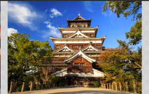
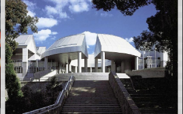
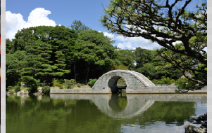
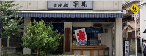
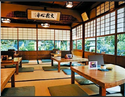
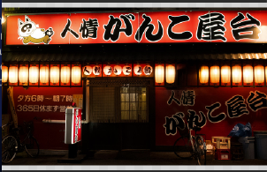

Découvrez Hiroshima, une ville empreinte d'histoire et de résilience. Explorez le parc du Mémorial de la Paix, un lieu poignant rappelant les conséquences tragiques de la Seconde Guerre mondiale. Ne manquez pas le château d'Hiroshima, un trésor architectural au cœur de la ville. Plongez-vous dans la culture locale en dégustant des plats traditionnels tels que l'Okonomiyaki. Hiroshima vous offre une expérience unique, entre histoire, culture et cuisine exquise.
|  |  |  |
|---|---|---|
| Château d'Hiroshima : Un château reconstruit qui offre une vue panoramique sur la ville. C'est un endroit idéal pour en apprendre davantage sur l'histoire de la région. | Musée d'Art Contemporain d'Hiroshima : Pour les amateurs d'art, ce musée abrite une collection impressionnante d'œuvres d'art contemporain japonais et internationaux. | Pont Shukkei-en : Un pont de pierre pittoresque situé dans le jardin Shukkeien, offrant un endroit idéal pour se détendre et apprécier la beauté naturelle. |
|  |  |  |
|---|---|---|
| Hatsukaichi Mizunoya : Situé à Hatsukaichi, près de l'île de Miyajima, ce restaurant propose des plats de fruits de mer frais et délicieux dans un cadre chaleureux et convivial. Les fruits de mer locaux sont la spécialité ici, offrant une expérience gastronomique authentique. | Rakusho : Ce restaurant propose une cuisine kaiseki traditionnelle avec une touche moderne. Les plats sont préparés avec des ingrédients de saison et sont présentés de manière artistique. L'ambiance est élégante et apaisante, créant une expérience culinaire mémorable. | Hiroshima Ganko Sushi : Si vous recherchez des sushis de qualité à Hiroshima, Ganko Sushi offre une variété de sushis et de fruits de mer frais dans un environnement élégant. L'ambiance sophistiquée en fait un choix idéal pour les amateurs de cuisine japonaise haut de gamme. |